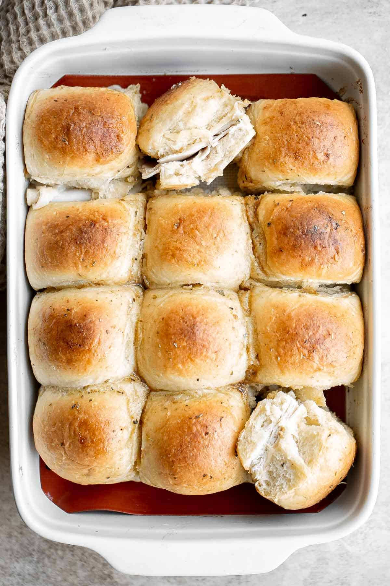

Turkey Sliders

Picture not mine - using for practice purposes
*Put life story here before posting*
Description:
This recipe is a quick and easy way to make a plate of turkey sliders. Cook time is typically very short even when adding additional ingredients.
I usually use sweet rolls for the bread, but feel free to use any type of roll you prefer.
Ingredients:
- Deli turkey meat - Around 8oz.
- Pickled red onion - To taste (I use a few tbps).
- Sliced cheese - Six (6) pieces (I usually use swiss)
- Hawaiian Rolls - One (1) 8-count package.
- Mayo - Two (2) tbps.
- Hot mustard - One (1) tbps.
- Aluminum foil - 24 inches
- Spices:
- Black pepper - to taste (I usually use one-quarter (1/4) tsp).
- Garlic Powder - to taste (I usually just use a dash).
- Salt - to taste (I usually use one-eigth (1/8) tsp)
- Red pepper flakes - to taste (I usually use one quarter (1/4) tsp).
Steps:
- Preheat oven to 350 degrees F.
- Create sauce using spices, mustard, and mayo.
- Separate top and bottom halves of rolls into two sheets
- Distribute turkey and cheese slices evenly across bottom sheet of rolls
- Spread sauce evenly across top sheet of rolls
- Combine top and bottom sheets of rolls to create sheet of sliders
- Wrap in foil and put in oven for about 30 minutes.